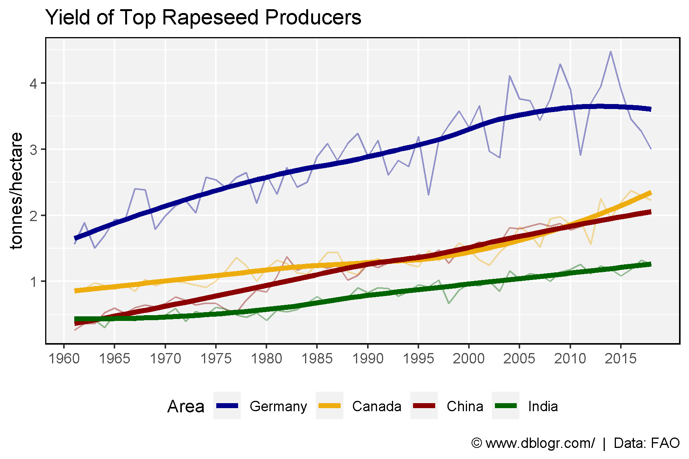
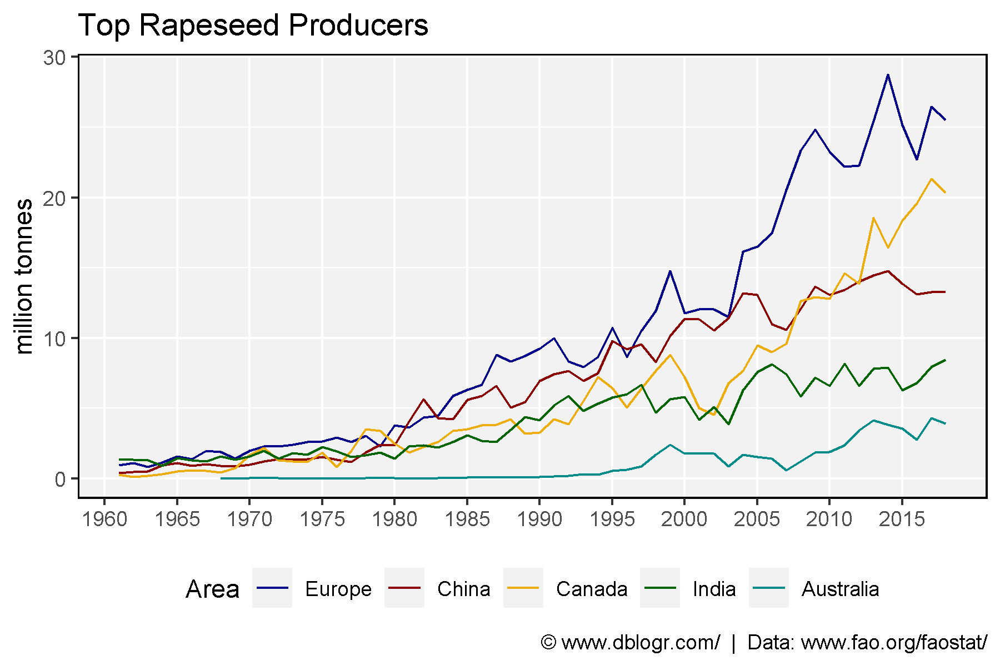

# devtools::install_github("derekmichaelwright/agData")
library(agData) # Loads: tidyverse, ggpubr, ggbeeswarm, ggrepel# Prep data
areas <- c("Germany", "Canada", "China", "India")
cols <- c("darkblue", "darkgoldenrod2", "darkred", "darkgreen")
xx <- agData_FAO_Crops %>%
filter(Crop == "Rapeseed", Area %in% areas, Measurement == "Yield") %>%
mutate(Area = factor(Area, levels = areas))
# Plot
mp <- ggplot(xx, aes(x = Year, y = Value, color = Area)) +
geom_line(alpha = 0.4) +
geom_smooth(method = "loess", size = 1.5, se = F) +
scale_color_manual(values = cols) +
scale_x_continuous(breaks = seq(1960, 2015, 5), minor_breaks = NULL) +
theme_agData() +
theme(legend.position = "bottom") +
labs(title = "Yield of Top Rapeseed Producers", y = "tonnes/hectare", x = NULL,
caption = "\xa9 www.dblogr.com/ | Data: FAO")
ggsave("rapeseed_01.png", mp, width = 6, height = 4)
# Prep data
areas <- c("Europe", "China", "Canada", "India", "Australia")
cols <- c("darkblue", "darkred", "darkgoldenrod2", "darkgreen", "darkcyan")
xx <- agData_FAO_Crops %>%
filter(Crop == "Rapeseed", Area %in% areas, Measurement == "Production") %>%
mutate(Area = factor(Area, levels = areas))
# Plot
mp <- ggplot(xx, aes(x = Year, y = Value / 1000000, color = Area)) +
theme_agData() + geom_line() +
scale_color_manual(values = cols) +
scale_x_continuous(breaks = seq(1960, 2015, 5), minor_breaks = NULL) +
theme(legend.position = "bottom") +
labs(title = "Top Rapeseed Producers", y = "million tonnes", x = NULL,
caption = "\xa9 www.dblogr.com/ | Data: www.fao.org/faostat/")
ggsave("rapeseed_02.png", width = 6, height = 4)